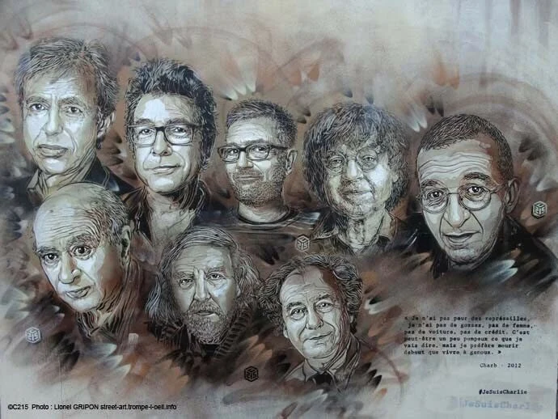

Publication relayée par le PCF 79
« Toujours debout ! », l’éditorial de L’Humanité dix ans après l’attentat contre Charlie Hebdo
Date de mise à jour indiquée par Facebook · 7 janvier 2025
Texte de la publication · L’Humanité
[Éditorial] Toujours debout !
Dix ans déjà. Nous n’avons rien oublié. Cabu, Charb, Tignous, Wolinski, Honoré, Elsa Cayat et leurs collègues ont été assassinés par des terroristes islamistes, porteurs d’un projet obscurantiste et rétrograde. Trois jours d’horreur se sont ensuivis, de Montrouge à Dammartin-en-Goële en passant par le bain de sang visant nos compatriotes juifs à l’Hyper Cacher de la porte de Vincennes. Nous pensons à chaque victime, à chaque blessé traumatisé par ces événements.
Nos camarades et amis de Charlie Hebdo, dont nombre d’entre eux étaient collaborateurs de l’Humanité et des acteurs assidus de la Fête de l’Humanité, sont morts car ils dessinaient. Depuis des années, avec leur crayon, ils racontaient les vicissitudes de nos vies et de la société, caricaturaient les puissants, la vie politique, les religions. Sous leur plume, le dessin devenait une œuvre d’art pour nous faire rire, nous interroger, nous émouvoir, nous irriter même.
Politiques, subversives et blasphématoires, leurs œuvres pouvaient déplaire, être débattues, c’était d’ailleurs leur but. Rien ne justifie l’assassinat de leurs auteurs. Menacés depuis des années, sous protection policière, ils refusaient de courber l’échine devant les ennemis de la liberté et les fanatiques de la haine et de la réaction. Ce 7 janvier 2015, c’est aussi la République laïque, sociale, universelle, nos valeurs et notre histoire qui ont volontairement été attaquées. Qu’a-t-il été fait depuis ?
Pour combattre les obscurantistes religieux, il est impératif que notre République reste unie, fraternelle et solidaire en commençant par refuser les amalgames. Les terroristes du Bataclan, ceux qui ont décapité Samuel Paty ne doivent en aucun cas être associés à la communauté musulmane. Refusons la haine de l’étranger, de l’arabe et des musulmans, prônée par l’extrême droite, qui partage, en réalité, le même rejet de l’autre que les fondamentalistes religieux.
Depuis dix ans, le niveau du débat public s’est considérablement affaibli, le racisme et la haine de l’autre ont été décomplexés, les vérités alternatives et les désinformations, propulsées par de puissants algorithmes sur les réseaux sociaux. Des médias télévisuels alliés de l’extrême droite s’érigent même en champions de la liberté d’expression dans une inversion incroyable des valeurs. Pour notre part, nous continuons à mener le combat pour le droit à l’information, mais aussi pour la liberté de création artistique et culturelle, éléments moteurs d’un projet émancipateur de société.
L’esprit Charlie est celui de l’art irrévérencieux, il nous incombe de le porter, toujours et encore, en dénonçant ce monde brutal et injuste. Dix ans plus tard, nous sommes toujours debout et nous choisissons le chemin de la paix et de la fraternité humaine.
Fabien Gay

Sources
L’Humanité · publication relayée par le PCF 79 · bibliothèque Facebook · AR-0002-FB-01212
À lire aussi · 7 janvier 2015. Le PCF rend hommage aux victimes de l’attentat contre Charlie Hebdo